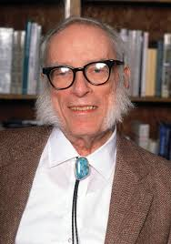

Información personal
- Nombre de nacimiento: Исаáк Ази́мов
- Nacimiento: 2 de enero de 1920, Petróvichi, Rusia Soviética
- Fallecimiento: 6 de abril de 1992, Manhattan, Estados Unidos
- Causa de muerte: Enfermedad relacionada con el SIDA
- Residencia: Brooklyn, Petróvichi, Boston, Oeste de Filadelfia y Manhattan
- Nacionalidad: Estadounidense
- Religión: Ninguna (ateísmo)
Información profesional
- Ocupación: Bioquímico, novelista, escritor de ciencia ficción
- Área: Bioquímica
- Años activo: 1939-1992
- Empleador: Universidad de Boston
- Género: Ciencia ficción
Descripción
Isaac Asimov (en ruso, Aйзек Азимов; Petróvichi, RSFS de Rusia, 2 de enero de 1920-Nueva York, 6 de abril de 1992) fue un escritor estadounidense de origen ruso, conocido por ser un prolífico autor de obras de ciencia ficción y divulgación científica.
Fue profesor de Bioquímica en la Escuela de Medicina de la Universidad de Boston.
Su obra más famosa es la Serie de la Fundación, también conocida como Trilogía o Ciclo de Trántor.
En total, firmó más de quinientos volúmenes y unas nueve mil cartas o postales.
Importancia en la ciencia ficción
Junto con Robert A. Heinlein y Arthur C. Clarke, Asimov fue considerado en vida como uno de los «tres grandes» escritores de ciencia ficción.
Biografía
Se considera que Isaac Asimov nació el 2 de enero de 1920 en Petróvichi.
Sus padres migraron hacia Nueva York el 11 de enero de 1923.
Su infancia transcurrió en Brooklyn, donde aprendió a leer a los cuatro o cinco años.
Comenzó a escribir en su adolescencia y a los diecinueve años empezó a publicar relatos.
Imagen
